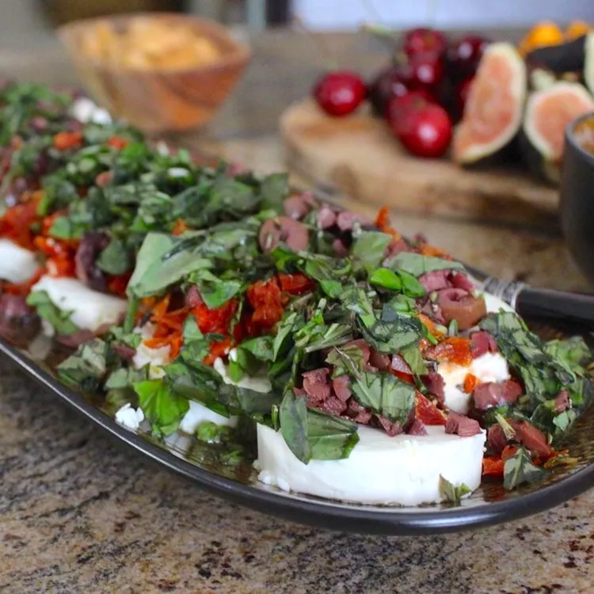

Best Ever Party Appetizer

Description
Marinated goat's cheese with sun-dried tomatoes. Served with sliced Frech bread.
Ingredients
- 12 ounces goat cheese
- 3 tablespoons olive oil
- 1 cup oil-packed sun-dried tomatoes, drained and diced
- 1 cup black olives, chopped
- 4 tablespoons chopped fresh basil
- 2 tablespoons chopped fresh rosemary
- 3 cloves garlic, halved
Directions
- Slice goat cheese into one inch pieces and place in a single layer on a large
platter. Sprinkle olive oil, sun-dried tomatoes, black olives, basil and rosemary over the cheese.
- Using toothpicks, insert the garlic cloves into the cheese throughout the mixture.
- Allow the mixture to marinate 6 hours, or overnight, in the refrigerator. Remove
the toothpicks, and serve with sliced French bread.
Nutrition Facts
(per serving)
- 202 Calories
- 17g Fat
- 5g Carbs
- 8g Protein